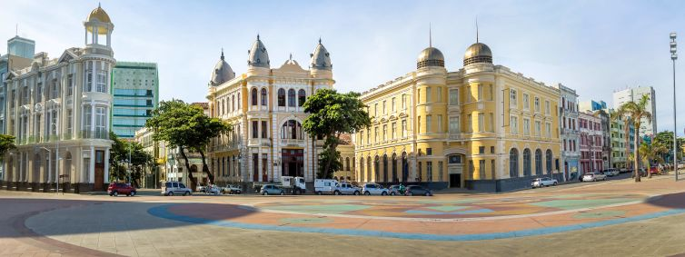
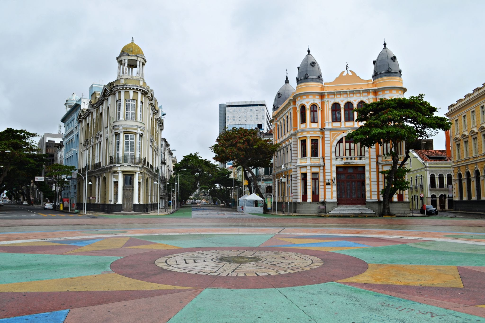

Marco Zero
Venha conhecer Recife
Marco Zero, na Praça Rio Branco, é conhecido como local de fundação da cidade de Recife e também como ponto inicial de contagem das distancias calculadas e partir de cidade. O lugar é um dos pontos mais importantes na capital Pernambuco, pois e também uma região a de forte movimento durante o Carnaval.
Aproveite suas visitas para tirar uma foto com os dois marcos (e antigo e o novo), observar a vista para o Parque de esculturas e os edificios do centro cultural da Caixa e da associação Comercial de Pernambuco.
texto escrito por Camille Panrera, extraido do site Destinos 